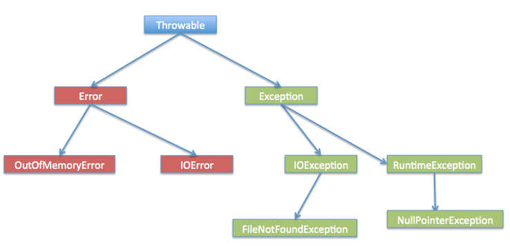
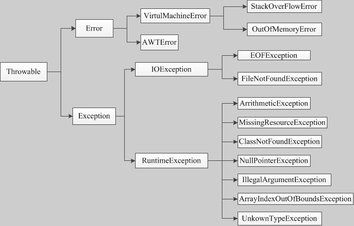

Manejo de excepciones en Java
En Java, el manejo de excepciones es un concepto de programación importante que se utiliza para manejar errores o situaciones anormales que pueden ocurrir durante la ejecución de un programa.
Las excepciones son algunos errores en el programa, pero no todos los errores son excepciones, y los errores a veces se pueden evitar.
Por ejemplo, si a tu código le falta un punto y coma, el resultado de la ejecución será un mensaje de errorjava.lang.Error, si usasSystem.out.println(11/0), entonces es porque usaste0como divisor, se lanzarájava.lang.ArithmeticExceptionla excepción.
Hay muchas razones por las que ocurren las excepciones, que generalmente se dividen en las siguientes categorías:
- El usuario ingresó datos no válidos.
- El archivo que se va a abrir no existe.
- La conexión se interrumpe durante la comunicación de red, o la memoria JVM se desborda.
Algunas de estas excepciones son causadas por errores del usuario, otras por errores del programa, y algunas otras por errores físicos.
Para entender cómo funciona el manejo de excepciones en Java, necesitas dominar los siguientes tres tipos de excepciones:
Excepción comprobada:La excepción comprobada más representativa es la causada por errores o problemas del usuario; estas excepciones obligan al programador a manejarlas en tiempo de compilación. Por ejemplo, al intentar abrir un archivo que no existe, ocurre una excepción; estas excepciones no pueden simplemente ignorarse en tiempo de compilación.
Este tipo de excepciones normalmente usatry-catchbloques para capturar y manejar la excepción, o usar en la declaración del métodothrowscláusulas para declarar las excepciones que el método puede lanzar.
try { // 可能会抛出异常的代码 } catch (IOException e) { // 处理异常的代码 }O bien:
public void readFile() throws IOException { // 可能会抛出IOException的代码 }Excepción de tiempo de ejecución:Estas excepciones no se exigen en tiempo de compilación; generalmente son causadas por errores en el programa, como NullPointerException, ArrayIndexOutOfBoundsException, etc. Este tipo de excepciones se pueden manejar de forma opcional, pero no es obligatorio.
try { // 可能会抛出异常的代码 } catch (NullPointerException e) { // 处理异常的代码 }Error:Los errores no son excepciones, sino problemas que escapan al control del programador; los errores generalmente se ignoran en el código. Por ejemplo, cuando ocurre un desbordamiento de pila, se produce un error, y tampoco se pueden detectar en la compilación.
Java proporciona las siguientes palabras clave y clases para admitir el manejo de excepciones:
- try: se utiliza para envolver bloques de código que pueden lanzar excepciones.
- catch: se utiliza para capturar la excepción y manejar el bloque de código de la excepción.
- finally: se utiliza para incluir bloques de código que deben ejecutarse independientemente de si ocurre una excepción.
- throw: se utiliza para lanzar excepciones manualmente.
- throws: se utiliza para especificar en la declaración del método las excepciones que el método puede lanzar.
- ExceptionClase: es la clase padre de todas las clases de excepción; proporciona algunos métodos para obtener información de la excepción, comogetMessage()、printStackTrace()etcétera.
Jerarquía de la clase Exception
Todas las clases de excepción son subclases que heredan de la clase java.lang.Exception.
La clase Exception es una subclase de la clase Throwable. Además de la clase Exception, Throwable también tiene una subclase Error.
Los programas Java normalmente no capturan errores. Los errores generalmente ocurren en fallas graves y están fuera del ámbito de manejo del programa Java.
Error se utiliza para indicar errores que ocurren en el entorno de ejecución.
Por ejemplo, desbordamiento de memoria de la JVM. Generalmente, el programa no se recupera de los errores.
La clase de excepción tiene dos subclases principales: la clase IOException y la clase RuntimeException.

Entre las clases integradas de Java (que se explicarán a continuación), se encuentran la mayoría de las excepciones comprobadas y no comprobadas de uso común.
Clases de excepción integradas en Java
El lenguaje Java define algunas clases de excepción en el paquete estándar java.lang.
Las subclases de las clases de excepción de tiempo de ejecución estándar son las clases de excepción más comunes. Debido a que el paquete java.lang se carga de forma predeterminada en todos los programas Java, la mayoría de las excepciones heredadas de las clases de excepción de tiempo de ejecución se pueden usar directamente.
Java también define otras excepciones según las distintas bibliotecas de clases; la siguiente tabla enumera las excepciones no comprobadas de Java.
| Excepción | Descripción |
|---|---|
| ArithmeticException | Se lanza esta excepción cuando se presenta una condición de operación anormal. Por ejemplo, cuando un entero se 'divide por cero', se lanza una instancia de esta clase. |
| ArrayIndexOutOfBoundsException | Excepción que se lanza al acceder a un arreglo con un índice ilegal. Si el índice es negativo o mayor o igual que el tamaño del arreglo, el índice es ilegal. |
| ArrayStoreException | Excepción que se lanza al intentar almacenar un objeto de tipo incorrecto en un arreglo de objetos. |
| ClassCastException | Se lanza esta excepción cuando se intenta convertir un objeto a una subclase de la que no es instancia. |
| IllegalArgumentException | La excepción lanzada indica que se ha pasado un argumento ilegal o incorrecto a un método. |
| IllegalMonitorStateException | La excepción lanzada indica que un hilo ha intentado esperar el monitor de un objeto, o intentar notificar a otros hilos que están esperando el monitor de un objeto, sin poseer el monitor especificado. |
| IllegalStateException | Señal generada cuando se llama a un método en un momento ilegal o inapropiado. En otras palabras, el entorno Java o la aplicación Java no se encuentra en el estado adecuado requerido para la operación solicitada. |
| IllegalThreadStateException | Excepción que se lanza cuando un hilo no se encuentra en el estado adecuado requerido para la operación solicitada. |
| IndexOutOfBoundsException | Indica que un índice de ordenación (por ejemplo, para arreglos, cadenas o vectores) está fuera de rango. |
| NegativeArraySizeException | Si la aplicación intenta crear un arreglo con tamaño negativo, se lanza esta excepción. |
| NullPointerException | Cuando la aplicación intenta usar en un lugar donde se necesita un objetonull, se lanza esta excepción. |
| NumberFormatException | Cuando la aplicación intenta convertir una cadena a un tipo numérico, pero la cadena no puede convertirse al formato adecuado, se lanza esta excepción. |
| SecurityException | Excepción lanzada por el administrador de seguridad, que indica una violación de seguridad. |
| StringIndexOutOfBoundsException | Esta excepción es lanzada porStringmétodo, e indica que el índice es negativo o está fuera del tamaño de la cadena. |
| UnsupportedOperationException | Cuando no se admite la operación solicitada, se lanza esta excepción. |
La siguiente tabla enumera las clases de excepción comprobadas definidas por Java en el paquete java.lang.
| Excepción | Descripción |
|---|---|
| ClassNotFoundException | Cuando la aplicación intenta cargar una clase y no puede encontrar la clase correspondiente, se lanza esta excepción. |
| CloneNotSupportedException | Cuando se llamaObjectde la claseclonemétodo para clonar un objeto, pero la clase del objeto no puede implementarCloneableinterfaz, se lanza esta excepción. |
| IllegalAccessException | Cuando se deniega el acceso a una clase, se lanza esta excepción. |
| InstantiationException | Cuando se intenta usarClassde la clasenewInstancemétodo para crear una instancia de una clase, pero el objeto de clase especificado no puede ser instanciado porque es una interfaz o una clase abstracta, se lanza esta excepción. |
| InterruptedException | Cuando un hilo es interrumpido por otro hilo, se lanza esta excepción. |
| NoSuchFieldException | La variable solicitada no existe. |
| NoSuchMethodException | El método solicitado no existe. |
Métodos de excepción
La siguiente lista son los métodos principales de la clase Throwable:
| N.º | Método y descripción |
|---|---|
| 1 |
public String getMessage() Devuelve información detallada sobre la excepción ocurrida. Este mensaje se inicializa en el constructor de la clase Throwable. |
| 2 |
public Throwable getCause() Devuelve un objeto Throwable que representa la causa de la excepción. |
| 3 |
public String toString() Devuelve una breve descripción de este Throwable. |
| 4 |
public void printStackTrace() Imprime este Throwable y su rastreo de pila en el flujo de error estándar. |
| 5 |
public StackTraceElement [] getStackTrace() Devuelve una matriz que contiene los niveles de la pila. El elemento con índice 0 representa la cima de la pila, y el último elemento representa el fondo de la pila de llamadas al método. |
| 6 |
public Throwable fillInStackTrace() Llena los niveles de pila del objeto Throwable con los niveles de pila de llamadas actuales, agregándolos a cualquier información anterior de los niveles de pila. |
Capturar excepciones
Se pueden capturar excepciones usando las palabras clave try y catch. El bloque de código try/catch se coloca donde es probable que ocurra la excepción.
El código dentro del bloque try/catch se denomina código protegido. La sintaxis para usar try/catch es la siguiente:
try
{
// 程序代码
}catch(ExceptionName e1)
{
//Catch 块
}
La declaración catch contiene la declaración del tipo de excepción que se va a capturar. Cuando se produce una excepción en el bloque de código protegido, se examina el bloque catch que sigue a try.
Si la excepción producida está incluida en el bloque catch, se pasa a dicho bloque catch, de la misma manera que se pasa un argumento a un método.
Ejemplo
En el siguiente ejemplo se declara un array con dos elementos; cuando el código intenta acceder al cuarto elemento del array, se lanza una excepción.
Código del archivo ExcepTest.java:
El resultado de compilar y ejecutar el código anterior es el siguiente:
Exception thrown :java.lang.ArrayIndexOutOfBoundsException: 3 Out of the block
Bloques de captura múltiple
La situación en la que un bloque try va seguido de varios bloques catch se denomina captura múltiple.
La sintaxis de la captura múltiple es la siguiente:
El fragmento de código anterior contiene 3 bloques catch.
Se puede añadir cualquier número de bloques catch después de la sentencia try.
Si se produce una excepción en el código protegido, la excepción se lanza al primer bloque catch.
Si el tipo de datos de la excepción lanzada coincide con ExceptionType1, se capturará aquí.
Si no coincide, se pasará al segundo bloque catch.
Y así sucesivamente, hasta que la excepción sea capturada o pase por todos los bloques catch.
Ejemplo
Este ejemplo muestra cómo usar múltiples try/catch.
Captura combinada de múltiples excepciones
Desde Java 7, se introdujo una sintaxis más concisa: la captura combinada de múltiples excepciones, que permite manejar varias excepciones sin relación de herencia con un solo bloque catch.
try {
// 可能抛出多个不同类型异常的代码
} catch (异常类型1 | 异常类型2 | 异常类型3 异常变量) {
// 统一处理
}
Es necesario tener en cuenta:
- Los tipos de excepción 1, los tipos de excepción 2, etc., no pueden tener relación de herencia; de lo contrario, se producirá un error de compilación.
- El nombre de la variable de excepción es una variable de referencia común a estas tres excepciones, por lo que dentro del bloque catch no se pueden llamar a sus métodos específicos.
- El compilador inferirá que el tipo de esta variable de excepción es el supertipo común más cercano de estas excepciones (por ejemplo, Exception o IOException).
Excepciones como las siguientes, que no se heredan entre sí, pueden lanzar simultáneamente SQLException e IOException:
Ejemplo
// 同时可能抛出 SQL 和 IO 异常
doSomething();
} catch (SQLException | IOException e) {
System.out.println("发生了 SQL 或 IO 异常！");
e.printStackTrace();
}
Ejemplo incorrecto (no se pueden combinar excepciones de clase padre e hija):
// 错误写法！
catch (FileNotFoundException | IOException e) {
// 会导致编译错误，因为 FileNotFoundException 是 IOException 的子类
}
FileNotFoundException es una subclase de IOException, por lo que esta sintaxis en realidad no es válida y provocará un error de compilación.
Palabras clave throws/throw
En Java,throw 和 throwslas palabras clave se utilizan para manejar excepciones.
throwLa palabra clave throw se utiliza para lanzar una excepción en el código, ythrowsla palabra clave throws se utiliza en la declaración de un método para especificar los tipos de excepción que podría lanzar.
Palabra clave throw
throwEsta palabra clave se utiliza para lanzar una excepción en el método actual.
Normalmente, cuando el código llega a una condición en la que no puede continuar ejecutándose con normalidad, se puede usarthrowla palabra clave throw para lanzar una excepción, con el fin de informar al llamador del estado de ejecución actual del código.
Por ejemplo, en el siguiente código, se comprueba si num es menor que 0 dentro del método; si es así, se lanza una excepción IllegalArgumentException.
Ejemplo
if (num < 0) {
throw new IllegalArgumentException("Number must be positive");
}
}
Palabra clave throws
throwsEsta palabra clave se utiliza en la declaración de un método para especificar las excepciones que el método puede lanzar. Cuando se lanza una excepción del tipo especificado dentro del método, dicha excepción se pasa al código que llama al método, donde se maneja.
Por ejemplo, en el siguiente código, cuando se produce una excepción IOException dentro del método readFile, dicha excepción se pasa al código que llama al método. En el código que llama a este método, se debe capturar o declarar el manejo de la excepción IOException.
Ejemplo
BufferedReader reader = new BufferedReader(new FileReader(filePath));
String line = reader.readLine();
while (line != null) {
System.out.println(line);
line = reader.readLine();
}
reader.close();
}
Un método puede declarar que lanza varias excepciones; las excepciones se separan con comas.
Por ejemplo, el siguiente método declara que lanza RemoteException e InsufficientFundsException:
Palabra clave finally
La palabra clave finally se utiliza para crear un bloque de código que se ejecuta después del bloque try.
Tanto si se produce una excepción como si no, el código del bloque finally siempre se ejecuta.
En el bloque finally se pueden ejecutar sentencias de tipo limpieza, cierre o finalización.
El bloque finally aparece al final de los bloques catch; la sintaxis es la siguiente:
Ejemplo
Código del archivo ExcepTest.java:
El resultado de compilar y ejecutar el ejemplo anterior es el siguiente:
Exception thrown :java.lang.ArrayIndexOutOfBoundsException: 3 First element value: 6 The finally statement is executed
Tenga en cuenta lo siguiente:
- catch no puede existir independientemente de try.
- Añadir un bloque finally después de try/catch no es obligatorio.
- Después de un bloque try no puede haber ni un bloque catch ni un bloque finally.
- Entre los bloques try, catch y finally no se puede añadir ningún código.
try-with-resources
Después de JDK7, Java añadiótry-with-resourceuna construcción sintáctica, destinada a gestionar automáticamente los recursos, asegurando que los recursos se cierren a tiempo después de su uso, evitando fugas de recursos.
try-with-resources es un mecanismo de manejo de excepciones que cierra automáticamente los recursos declarados en el bloque try, sin necesidad de cerrarlos explícitamente en un bloque finally.
En la sentencia try-with-resources, solo necesita declarar los recursos después de la palabra clave try y luego un bloque de código. Tanto si la operación dentro del bloque tiene éxito como si no, los recursos se cierran automáticamente después de que el bloque try haya terminado de ejecutarse.
try (resource declaration) {
// 使用的资源
} catch (ExceptionType e1) {
// 异常块
}
En la sintaxis anterior, try se utiliza para declarar e instanciar recursos, y catch para manejar todas las excepciones que puedan surgir al cerrar los recursos.
Nota:La sentencia try-with-resources cierra todos los recursos que implementan la interfaz AutoCloseable.
Ejemplo
public class RunoobTest {
public static void main(String[] args) {
String line;
try(BufferedReader br = new BufferedReader(new FileReader("test.txt"))) {
while ((line = br.readLine()) != null) {
System.out.println("Line =>"+line);
}
} catch (IOException e) {
System.out.println("IOException in try block =>" + e.getMessage());
}
}
}
El resultado de salida del ejemplo anterior es:
IOException in try block =>test.txt (No such file or directory)
En el ejemplo anterior, instanciamos un objeto BufferedReader para leer datos del archivo test.txt.
Al declarar e instanciar el objeto BufferedReader en la sentencia try-with-resources, los recursos se cierran al finalizar la ejecución, sin necesidad de considerar si la sentencia try se ejecutó con normalidad o lanzó una excepción.
Si se produce una excepción, se puede usar catch para manejarla.
Observe también, en lugar de usartry-with-resourcesy cambiarlo afinallypara cerrar los recursos, la cantidad total de código es mucho mayor y además resulta más complejo y engorroso:
Ejemplo
class RunoobTest {
public static void main(String[] args) {
BufferedReader br = null;
String line;
try {
System.out.println("Entering try block");
br = new BufferedReader(new FileReader("test.txt"));
while ((line = br.readLine()) != null) {
System.out.println("Line =>"+line);
}
} catch (IOException e) {
System.out.println("IOException in try block =>" + e.getMessage());
} finally {
System.out.println("Entering finally block");
try {
if (br != null) {
br.close();
}
} catch (IOException e) {
System.out.println("IOException in finally block =>"+e.getMessage());
}
}
}
}
El resultado de salida del ejemplo anterior es:
Entering try block IOException in try block =>test.txt (No such file or directory) Entering finally block
try-with-resources para manejar múltiples recursos
En una sentencia try-with-resources se pueden declarar múltiples recursos; para ello se utiliza el punto y coma;para separar cada recurso:
Ejemplo
import java.util.*;
class RunoobTest {
public static void main(String[] args) throws IOException{
try (Scanner scanner = new Scanner(new File("testRead.txt"));
PrintWriter writer = new PrintWriter(new File("testWrite.txt"))) {
while (scanner.hasNext()) {
writer.print(scanner.nextLine());
}
}
}
}
El ejemplo anterior utiliza un objeto Scanner para leer una línea del archivo testRead.txt y escribirla en un nuevo archivo testWrite.txt.
Cuando se declaran múltiples recursos,try-with-resourcesla sentencia cierra estos recursos en orden inverso. En este ejemplo, el objeto PrintWriter se cierra primero y luego el objeto Scanner.
Consulte más contenido en:
- try-with-resources：La sentencia Java try-with-resources
- Gestión de recursos:La clase Java Cleaner
Declarar excepciones personalizadas
En Java puedes definir excepciones personalizadas. Al escribir tu propia clase de excepción, ten en cuenta los siguientes puntos.
- Todas las excepciones deben ser subclases de Throwable.
- Si deseas escribir una excepción comprobada, debes heredar de la clase Exception.
- Si quieres escribir una excepción de runtime, debes heredar de la clase RuntimeException.
Puedes definir tu propia clase de excepción de la siguiente manera:
La clase de excepción creada simplemente heredando de la clase Exception es una excepción comprobada.
La siguiente clase InsufficientFundsException es una clase de excepción definida por el usuario que hereda de Exception.
Una clase de excepción, como cualquier otra clase, contiene variables y métodos.
Ejemplo
El siguiente ejemplo es una simulación de una cuenta bancaria, que se identifica mediante el número de la tarjeta bancaria, y puede realizar operaciones de depósito y retiro.
Código del archivo InsufficientFundsException.java:
Para mostrar cómo usar nuestra clase de excepción personalizada,
En la siguiente clase CheckingAccount se incluye un método withdraw() que lanza una excepción InsufficientFundsException.
Código del archivo CheckingAccount.java:
El siguiente programa BankDemo demuestra cómo llamar a los métodos deposit() y withdraw() de la clase CheckingAccount.
Código del archivo BankDemo.java:
Compile los tres archivos anteriores y ejecute el programa BankDemo; el resultado es el siguiente:
Depositing $500...
Withdrawing $100...
Withdrawing $600...
Sorry, but you are short $200.0
InsufficientFundsException
at CheckingAccount.withdraw(CheckingAccount.java:25)
at BankDemo.main(BankDemo.java:13)
Excepciones comunes
En Java se definen dos tipos de excepciones y errores.
- JVM(JavaMáquina virtual)Excepciones:Excepciones o errores lanzados por la JVM. Por ejemplo: la clase NullPointerException, la clase ArrayIndexOutOfBoundsException, la clase ClassCastException.
- Excepciones a nivel de programa:Excepciones lanzadas por el programa o por programas de API. Por ejemplo: la clase IllegalArgumentException, la clase IllegalStateException.
Mejores prácticas para el manejo de excepciones
- Capturar las excepciones en el lugar adecuado y manejarlas apropiadamente para garantizar la estabilidad y fiabilidad del programa.
- Evite capturar excepciones en exceso; intente capturar con precisión tipos específicos de excepciones.
- Utilice el bloque finally para liberar recursos, por ejemplo, cerrar archivos o conexiones de base de datos, para garantizar la liberación correcta de los recursos.
- Priorice el manejo de excepciones comprobadas y evite convertir excepciones comprobadas en no comprobadas.
El manejo de excepciones es una parte importante de la escritura de aplicaciones Java robustas; manejar las excepciones razonablemente puede mejorar la mantenibilidad y fiabilidad del programa.
Otras extensiones
veblen
153***1086@qq.com
Explicación de términos:
veblen
153***1086@qq.com
为我所望
190***9847@qq.com
El uso de excepciones puede seguir los siguientes principios:
1. Cuando el método actual es sobrescrito, el método que lo sobrescribe debe lanzar la misma excepción o una subclase de la excepción;
2. Utilice la sentencia try-catch en la declaración del método actual para capturar la excepción;
3. Si la clase padre lanza múltiples excepciones, el método sobrescrito debe lanzar un subconjunto de esas excepciones, no puede lanzar nuevas excepciones.
为我所望
190***9847@qq.com
doublefan
187***60835@163.com

Como se puede ver en la figura, todas las excepciones y errores heredan de la clase Throwable, es decir, todas las excepciones son un objeto.
En términos generales, las excepciones se dividen en dos partes:
1. error---Error: se refiere a errores que el programa no puede manejar, y representa errores graves que ocurren durante la ejecución de la aplicación. Por ejemplo, OutOfMemoryError que ocurre durante la ejecución de la JVM, o la ocupación del puerto en programación Socket, errores que el programa no puede manejar.
2. Exception---Excepción: las excepciones se pueden dividir en excepciones de tiempo de ejecución y excepciones de compilación.
3. El mecanismo de manejo de excepciones en Java: lanzar excepciones y capturar excepciones. Una excepción que un método puede capturar debe ser una excepción lanzada en algún lugar del código Java. En pocas palabras, las excepciones siempre se lanzan primero y luego se capturan.
4. La diferencia entre throw y throws:
public void test() throws Exception { throw new Exception(); }A partir del código anterior, se puede ver claramente la diferencia entre ambos. throws indica que un método declara que puede lanzar una excepción; throw indica que aquí se lanza una excepción definida (puede ser una excepción personalizada que herede de Exception, o una clase de excepción proporcionada por Java).
5. A continuación, veamos cómo capturar excepciones:
1) Primero, Java usa los bloques de código try-catch o try-catch-finally para capturar excepciones. El programa captura el código dentro del bloque try; si se captura una excepción, se procesa en el bloque catch. Si hay finally, se ejecuta el código dentro de finally después del tratamiento en catch. Sin embargo, existen dos problemas:
a. Vea el siguiente código:
try{ //待捕获代码 }catch（Exception e）{ System.out.println("catch is begin"); return 1 ； }finally{ System.out.println("finally is begin"); }Hay un return en catch, ¿entonces se ejecutará finally? La respuesta es sí. El resultado de ejecución del código anterior es:
Es decir, primero se ejecuta el código dentro de catch, luego se ejecuta el código dentro de finally, y finalmente se retorna 1;
b. Vea el siguiente código:
try{ //待捕获代码 }catch（Exception e）{ System.out.println("catch is begin"); return 1 ； }finally{ System.out.println("finally is begin"); return 2 ; }En el código b, el resultado de salida es el mismo que en a, sin embargo, se retorna return 2. La razón es obvia: después de ejecutar finally, ya se ha retornado, por lo que el return dentro de catch no se ejecutará. Es decir, finally siempre se ejecuta antes del return en catch. (¡Esta es una pregunta frecuente en entrevistas!)
6. Para la captura de excepciones, no se debe, por conveniencia, combinar varias excepciones en una sola Exception para capturarlas. Por ejemplo, hay excepciones de IO y excepciones de SQL; dos excepciones completamente diferentes deben manejarse por separado. Además, al manejar excepciones en catch, no se debe simplemente usar e.printStackTrace(), sino que se debe realizar un manejo detallado, como imprimir detalles en la consola o registrar en un log.
doublefan
187***60835@163.com
599069310
599***310@qq.com
El lenguaje Java define algunas clases de excepción en el paquete estándar java.lang. Las subclases de la clase de excepción estándar de tiempo de ejecución son las clases de excepción más comunes. Dado que el paquete java.lang se carga de forma predeterminada en todos los programas Java, la mayoría de las excepciones que heredan de la clase de excepción de tiempo de ejecución se pueden usar directamente.
/** * 异常: * finally不一定被执行，，例如 catch 块中有退出系统的语句 System.exit(-1); finally就不会被执行 * */ import java.io.*; public class Demo { /** * @param args */ public static void main(String[] args) { //检查异常1.打开文件 FileReader fr=null; try { fr=new FileReader("d:\\aa.text"); // 在出现异常的地方，下面的代码的就不执行 System.out.println("aaa"); } catch (Exception e) { System.out.println("进入catch"); // 文档读取异常 // System.exit(-1); System.out.println("message="+e.getLocalizedMessage()); //没有报哪一行出错 e.printStackTrace(); // 打印出错异常还出现可以报出错先异常的行 } // 这个语句块不管发生没有发生异常，都会执行 // 一般来说，把需要关闭的资源，文件，连接，内存等 finally { System.out.println("进入finally"); if(fr!=null); { try { fr.close(); } catch (Exception e) { // TODO: handle exception e.printStackTrace(); } } } System.out.println("OK"); } }599069310
599***310@qq.com
Husky
lh1***ke@163.com
throws se usa en una función para declarar que la función puede tener problemas.
Lanzar la excepción expone el problema para que sea manejado.
Se puede lanzar a la máquina virtual para que la maneje, o usar try...catch... para manejarla. La forma en que la máquina virtual la maneja es imprimir la excepción y terminar el código donde se produjo la excepción.
throw se usa en un bloque de código, seguido del objeto de la excepción. Dicho objeto puede ser una excepción personalizada, y throw se usa dentro de un método.
class FuShuException extends Exception //getMessage(); { private int value; FuShuException() { super(); } FuShuException(String msg,int value) { super(msg); this.value = value; } public int getValue() { return value; } } class Demo { int div(int a,int b)throws FuShuException { if(b<0) { // 手动通过throw关键字抛出一个自定义异常对象。 throw new FuShuException("出现了除数是负数的情况------ / by fushu",b); } return a/b; } } class ExceptionDemo3 { public static void main(String[] args) { Demo d = new Demo(); try { int x = d.div(4,-9); System.out.println("x="+x); } catch (FuShuException e) { System.out.println(e.toString()); //System.out.println("除数出现负数了"); System.out.println("错误的负数是："+e.getValue()); } System.out.println("over"); } }Husky
lh1***ke@163.com
Husky
lh1***ke@163.com
throws se usa en métodos, puede lanzar múltiples excepciones, y los nombres de clase de cada excepción se separan con comas.
Al capturar excepciones con try...catch..., las excepciones grandes (clase Exception) se colocan debajo, y las excepciones pequeñas arriba. De lo contrario, al capturar excepciones, las excepciones pequeñas no podrán ser capturadas, porque todas serán capturadas en la clase de excepción grande.
Es decir: si las excepciones en múltiples bloques catch tienen una relación de herencia, el bloque catch de la excepción de la clase padre se coloca al final.
La forma de manejar excepciones no debe ser simplemente imprimir o mostrar directamente. La forma correcta es:
class FuShuException extends Exception { private int value; FuShuException() { super(); } FuShuException(String msg, int value) { super(msg);//调用父类有参构造,获得异常信息 this.value = value; } public int getValue() { return value; } } class Demo { int div(int a, int b) throws FuShuException { if (b < 0) throw new FuShuException("出现了除数是负数的情况by fushu", b);// 手动通过throw关键字抛出一个自定义异常对象。 return a / b; } } public class MyT { public static void main(String[] args) { Demo d = new Demo(); try { int x = d.div(4, -9); System.out.println("x=" + x); } catch (FuShuException e) { System.out.println(e.toString()); System.out.println("错误的负数是：" + e.getValue()); }catch (Exception e) {//大的异常放在下方,小的异常放在上方 System.out.println(e.getMessage()); } System.out.println("end"); } }Husky
lh1***ke@163.com
藏剑
947***451@qq.com
Dirección de referencia
1. Excepción comprobada (Checked Exception)
Entendimiento personal: Lo que se llama comprobada (Checked) significa que el compilador debe revisar este tipo de excepción. El propósito de la revisión es, por un lado, que la ocurrencia de este tipo de excepción es difícil de evitar, y por otro lado, hacer que el desarrollador resuelva este tipo de excepción, por lo que se denomina excepción que debe manejarse (try...catch). Si no se maneja este tipo de excepción, el compilador en el entorno de desarrollo integrado generalmente dará un mensaje de error.
Por ejemplo:Un método para leer un archivo no tiene errores de lógica en su código, pero durante la ejecución del programa puede lanzar una FileNotFoundException porque no se encuentra el archivo. Si no se manejan estas excepciones, el programa seguramente fallará en el futuro. Por lo tanto, el compilador te indicará que debes capturar y manejar esta posible excepción; si no la manejas, no podrás compilar.
2. Excepción no comprobada (Unchecked Exception)
Entendimiento personal:Lo que se llama no comprobada (Unchecked) significa que el compilador no revisa este tipo de excepción. Al no ser revisada, el desarrollador no está obligado a manejarla durante la fase de edición y compilación del código. Este tipo de excepción generalmente se puede evitar, por lo que no es necesario manejarla (try...catch). Si no se maneja este tipo de excepción, el compilador en el entorno de desarrollo integrado tampoco dará un mensaje de error.
Por ejemplo:Tu lógica de programa tiene problemas en sí misma, como el desbordamiento de índices de un array o el acceso a un objeto null. Este tipo de error puedes evitarlo tú mismo. El compilador no te obliga a comprobar esta excepción.
藏剑
947***451@qq.com
Dirección de referencia